Gnista
FM percussionTwo-operator FM. Kicks, toms and clicky percussion. The pitch sweep makes the kick's thump.
- Pitch
- Ratio
- FM amount
- FM decay
- Pitch sweep
- Sweep decay
- Decay
- Drive
An eight-track groovebox firmware for the M-VAVE FM-1. Seven sound engines, a sequencer where any knob can change on any step, and effects you play live.
Status: in development. Grus builds for the FM-1 and runs in the simulator and the browser emulator, but it has not been played on a real FM-1 yet. It supports both versions of the FM-1, with the older and the newer flash chip.
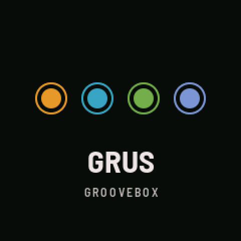
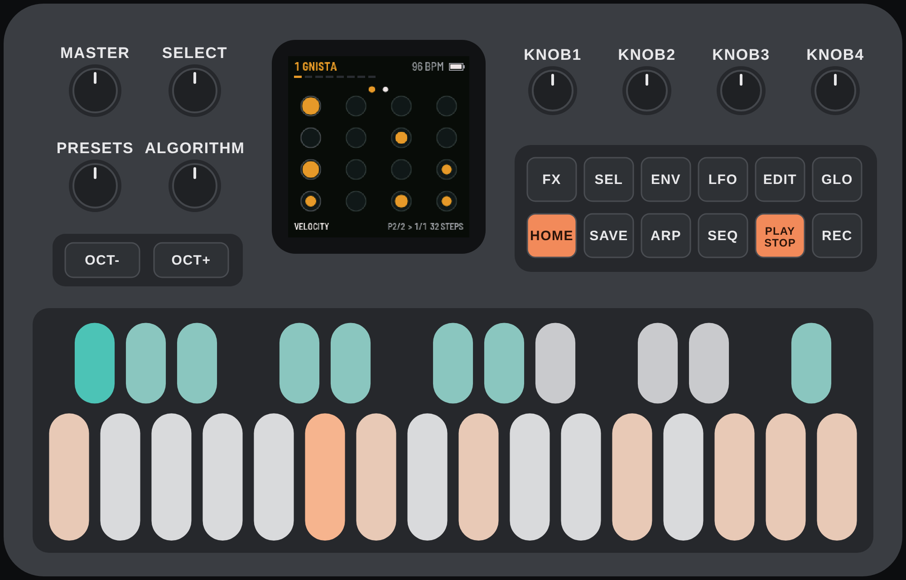
Rendered by Grus's own sound code, the same that runs on the FM-1.
The 16 white keys are the steps. The black keys choose the track, and three of them change what the next key does. The buttons open the pages. Tap a button for its page; some do something else when you hold them for half a second.
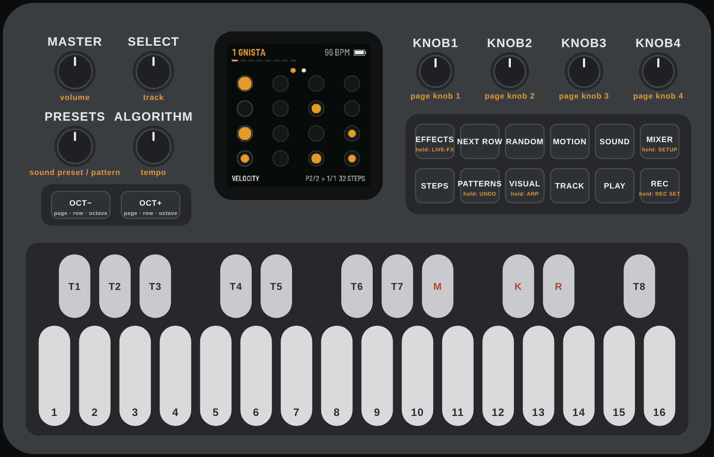
| Button | Tap | Hold |
|---|---|---|
| HOME | Steps. Again: next 16 steps | |
| EDIT | Sound. Again: knobs 5–8 | |
| LFO | Motion. Again: knobs 5–8 | |
| SEQ | Track. Again: mixer row | |
| FX | Effects | Live effects |
| GLO | Mixer. Again: next row | Setup |
| SAVE | Patterns. Again: song | Undo |
| ENV | Random. Again: steps or sound | |
| ARP | Visual | Arpeggiator |
| REC | Keys play notes, on or off | Scale and chords |
| PLAY | Start and stop | |
| SEL | Next row of knobs | |
| OCT− OCT+ | Row 1 or row 2 of knobs; previous or next steps on STEPS; an octave in REC; OCT+ answers yes to a question |
| Encoder | Turns |
|---|---|
| SELECT | The track |
| ALGORITHM | The tempo, one BPM a click |
| PRESET | The pattern; on SOUND, the engine's ten sound presets |
| K1–K4 | The four knobs of the row on screen. Hold steps and turn: a lock |
| Black key | Then |
|---|---|
| M | A track key mutes or unmutes it |
| K | A step or track key copies it; the next ones paste |
| R | A step: clear its settings. A track: clear its steps (asks first). On PATTERNS, a slot key: back to the factory pattern |
Every page shows the selected track's number and engine at the top right, and a bar per track under the title. Knob pages show four knobs at a time: the bright row is the one K1–K4 turn.
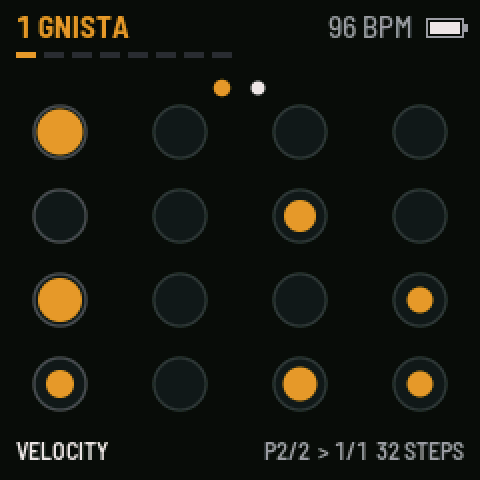
Sixteen circles, one per white key. A filled circle plays; its size is the velocity. The white ring is the playhead, and a small dot beside a circle means the step has its own settings or locks.
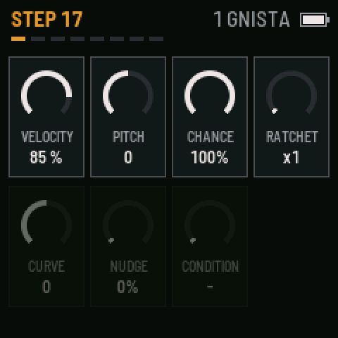
Hold a step and its own settings appear. Turn a knob while holding. Hold several steps to set them all at once.
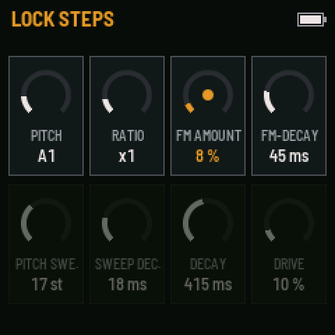
Hold a step on a knob page and turn a knob: that value is stored on the step and plays only there; the rest of the track keeps the knob's own value. A locked knob turns the track's colour and gets a dot. Up to six knobs can be locked on one step.
Every engine knob, the motion knobs and the track's level, pan, reverb and delay can be locked.
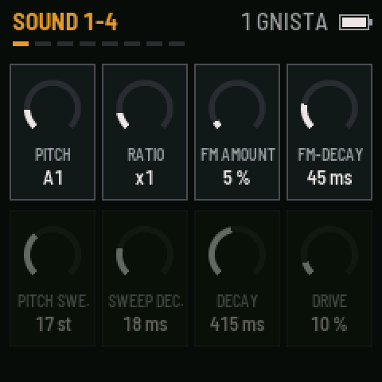
The eight knobs of the track's engine. Each engine has its own; they are listed under Engines. PRESET steps through ten sound presets for the engine.
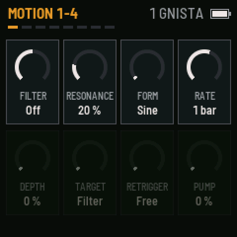
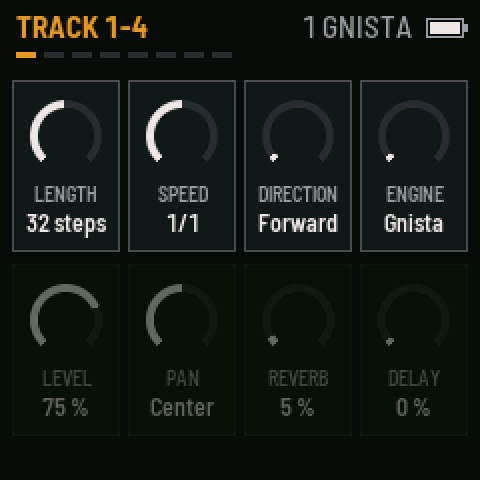
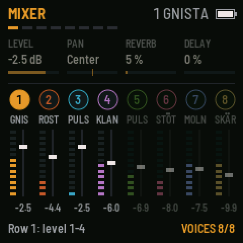
All eight tracks with level meters. GLO again moves through four rows: levels 1–4, levels 5–8, the selected track's level, pan, reverb and delay, and then swing, volume, voices and tempo.
Voices is how many sounds can ring at once, shared by all tracks (4 to 16). The count at the bottom right turns orange when they are all in use.
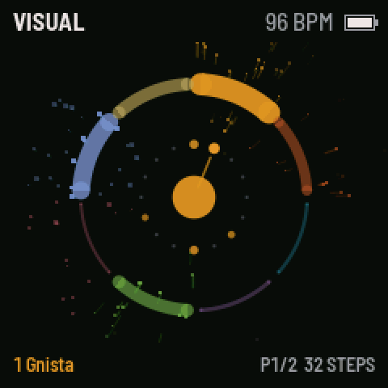
Something to look at while it plays. Each track is an arc that swells with its level and throws grains on every hit. In the middle, the selected track's 16 steps as a clock with a hand at the playhead, following it through all 64 steps.
Each track has its own length (1–64 steps), speed and direction. A pattern's pass is the longest track, rounded up to whole bars.
0–60 %, on the mixer's last row. It pushes every second 1/16 late.
Sounds are taken from one shared pool, so a long pad tail and a busy hi-hat share the same budget.
Chance makes a step play sometimes. A condition makes it play on chosen passes: 1:2, 2:2, 1:3 … 4:4.
Up to eight hits inside one step, spread evenly or bunched with the curve.
Hold white key 16 on the live effects page: every step plays, and chance and conditions are ignored.
Changes are made to the pattern that is playing. Save it to a slot before loading another pattern, or the changes are gone.
Hold SAVE to step back. Grus remembers up to 24 changes.
Every engine has eight knobs, the first one always the pitch. Any engine can sit on any track. A new pattern starts with this line-up:
Two-operator FM. Kicks, toms and clicky percussion. The pitch sweep makes the kick's thump.
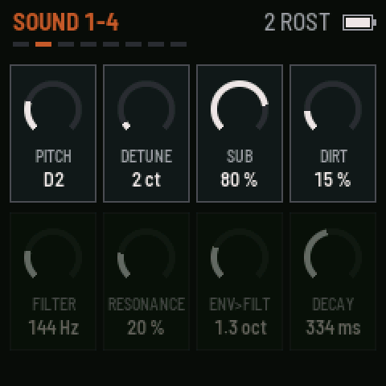
Two detuned saws and a sub octave through a saturating four-pole low-pass, and a distortion that adds dirt without losing the low end. Built for dark techno.
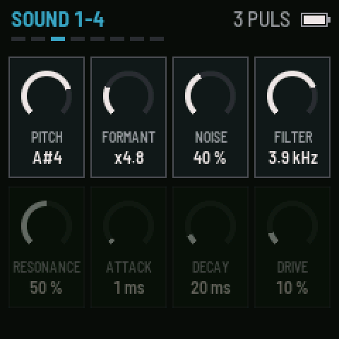
Pulsar trains and noise through a resonant filter. Snares, claps, hi-hats and squeaky textures.
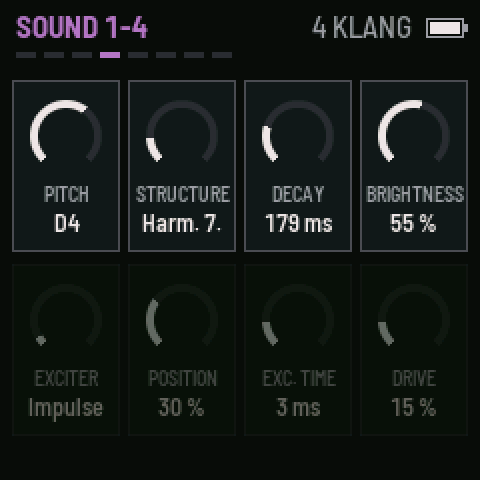
A strike that sets four resonators ringing. Structure goes from harmonic (wood, marimba) to metallic (bells, plates, glass).
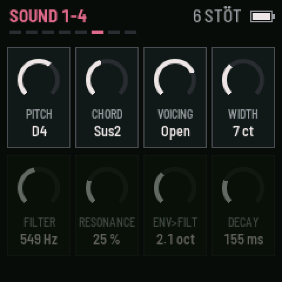
Short chord stabs. Saw waves through a filter that closes fast after the hit, so the delay and reverb carry the sound. Two voices, so stabs ring into each other.
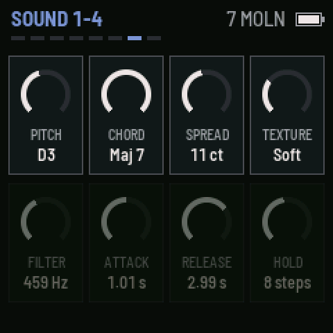
Chords of drifting, detuned oscillators with a slow attack, a wide stereo field and a filter that breathes. Three voices, so the chords flow into each other. Hold sets how many steps a chord lasts.
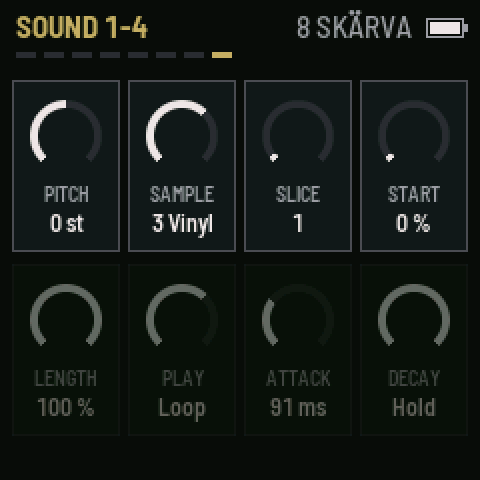
Four sample slots (Kit, Break, Vinyl, Chords), each cut into up to 16 slices. Play forward, reverse, looped or ping-pong. Start, length and loop make it a texture tool as much as a drum machine.
Moln's chords: unison, octave, fifth, minor, major, sus4, minor 7, major 7. Stöt's: minor 7, minor 9, minor 11, sus2, quartal, major 9, minor, fifth, voiced close, in either inversion, open, or with a bass note.
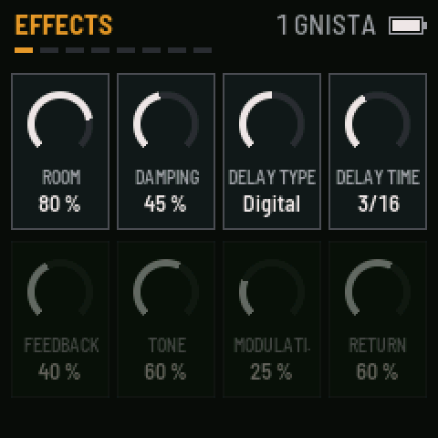
Each track sends to one reverb and one delay with its own amounts (TRACK page, second row).
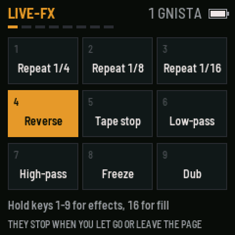
Hold white keys 1–9 to play an effect on the whole mix; let go and it stops. Key 16 is fill. Leaving the page stops them all.
On the master, so nothing clips. The ceiling is set in SETUP, from −6 to 0 dB.
A curve for the FM-1's small speaker: it cuts the deep bass the speaker cannot play (below 150 Hz), lifts the low mids around 280 Hz so bass lines still come through, and softens the top. Turn it off for headphones.
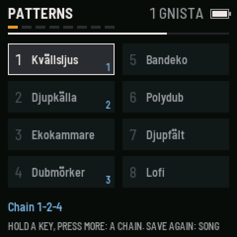
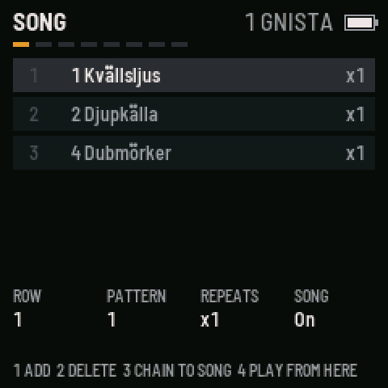
A list of rows, each a pattern and how many times it plays. The knobs set the row, its pattern and repeats, song on or off, and whether the song loops or stops at the end.
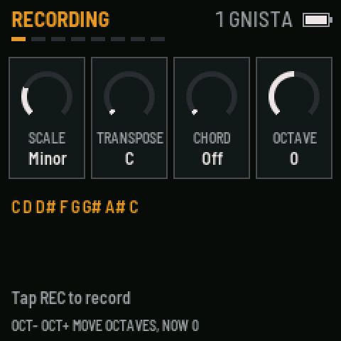
Tap REC and the keys play the selected track. While the sequencer runs, each note is written into the step that is playing. Tap again to go back to steps.
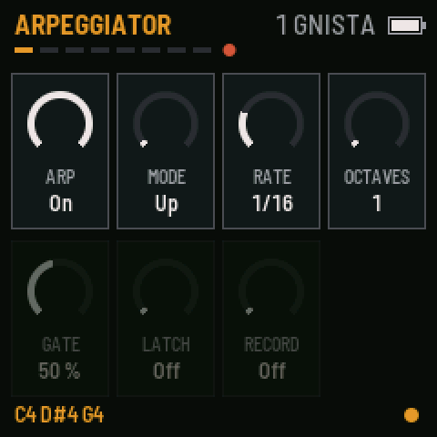
Turn Arp on, tap REC, and hold keys: the notes play one at a time on the selected track. It follows the sequencer's clock and swing, and runs at the tempo when stopped.
ENV opens the random page for the selected track. ENV again switches between steps and sound. The white keys run the actions.
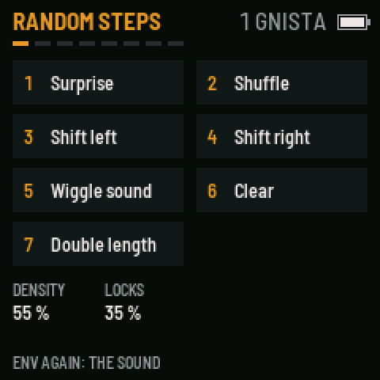
Surprise writes a short motif that suits the engine and repeats it over the track, with a fill at the end of the phrase. Drums get an even spread, the kick holds the downbeat, melodic engines walk the scale set on the REC page, and pads play a few long chords.
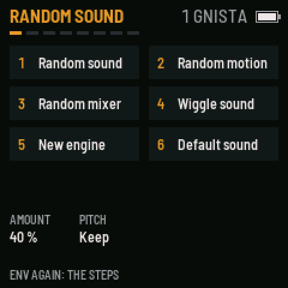
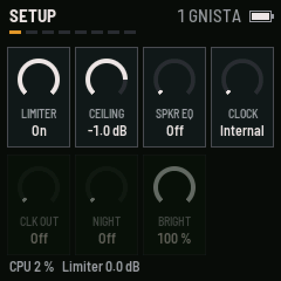
These settings, the song and the chains are saved by themselves.
Grus is written in C on fm1-base, which handles the FM-1's screen, keys, LEDs, audio, MIDI, storage and updates. You build it on Linux, or in WSL on Windows.
Try it in the browser first: the emulator build runs the same code with the panel, screen and sound.
git clone --recursive https://github.com/charlesvestal/fm1-base ~/fm1-base export JIELI_TOOLCHAIN=~/.jieli/toolchain export AC79_SDK=~/fw-AC79_AIoT_SDK cd ~/fm1-base python3 tools/build.py ~/grus/app # ~/grus/app/build/grus.fwsc
source ~/emsdk/emsdk_env.sh cd ~/fm1-base python3 tools/build.py ~/grus/app --web cd ~/grus/app/build/emu python3 -m http.server 8000 # open http://localhost:8000
Before installing any custom firmware, back up the FM-1's own firmware. Grus has not been tested on hardware yet.